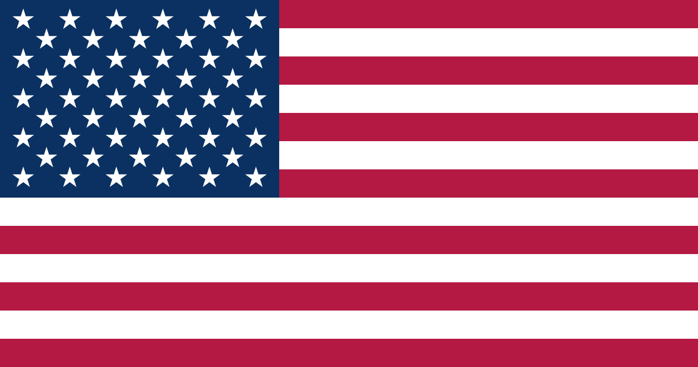

‘나눔, 그리고 나음 5호’에서 살펴보았듯 골프의 기원은 다양하다. 고대 로마 시대 놀이인 ‘파가니카’ 유래설, 네덜란드 ‘콜벤’ 유래설 등 여러 가지이지만, 그중 가장 인정받는 것은 스코틀랜드 양치기 기원설이다. 이번에는 각국의 골프 역사에 대해 살펴보기로 한다.
영국의 골프
스코틀랜드에서 서민들에게 대대로 사랑받아 온 골프는 영국에서 스포츠 경기의 한 종목으로 자리 잡기 시작했다. 1608년 런던 블랙히스 클럽에 골프회가 조직되었고, 1744년 스코틀랜드 리스에서 조직된 ‘리스 젠틀맨 골프회’는 세계 최초의 골프 클럽으로 꼽히며 골프 규칙 13조항을 명문화했다. 이 조항은 1754년 ‘세인트 앤드루스 클럽’의 수정·보완, 1834년 ‘로열 앤드 에인션트 골프 클럽’의 규칙 공포를 거쳐 현재 골프 규칙의 근간이 되었다. 영국은 1860년 세계 최초의 골프 토너먼트인 ‘브리티시 오픈’을 개최하며 골프를 정식 스포츠 반열에 올려놓았다.

미국의 골프영국을 중심으로 발전한 골프가 19세기 말 미국에 전파되면서 새로운 장을 열었다. 1894년 미국골프협회가 창립되고 ‘제1회 아마추어 선수권대회’, ‘US 오픈’이 열렸다. 1901년 프로골프협회인 US PGA가 설립되면서 골프는 더욱 빠르게 발전했다. 미국은 제2차 세계대전을 거치며 성장한 부와 힘을 바탕으로 유명한 선수를 발굴하고 새로운 장비를 개발하며 영국을 앞질렀다. 오늘날 골프 규칙은 미국골프협회와 영국골프협회가 공동으로 세계 각국의 의견을 모아 4년마다 개정·공표한다.
한국의 골프
문서로 남아 있는 것은 아니지만 1900년경 함경남도 원산항의 세관 관리로 고용된 영국인이 세관 안에 6홀의 골프장을 만들어 경기한 것이 시작이라고 알려졌다. 한국의 첫 골프장은 1921년 현재의 효창공원 자리에 9홀 코스로 세워진 ‘효창원 골프장’이다. 1924년 청량리로 이전하면서 18홀이 완성되었고 한국 골프 사상 처음으로 ‘경성골프구락부’가 생겼다. 1929년 군자리 골프장(현 서울어린이대공원)이 세워지면서 본격적으로 한국 골프가 시작되었다.
알아두면 재미있는 Tip
우리나라 최초의 프로 골퍼는 누구일까?
연덕춘 선수이다. 유년기 군자리 골프장 근처에 살면서 캐디를 하며 골프를 배웠고, 19세에 일본으로 유학을 떠나 프로가 되었다. 1941년 일본 오픈에서 우승하며 이름을 떨쳤다. 한국프로골프협회는 ‘덕춘상(최저타수상)’을 제정해 그를 기리고 있다.
로마 ‘파가니카’, 네덜란드 ‘콜벤’이 있다면 우리나라는?
‘격구’가 있다. 말을 타고 막대기로 공을 치는 기마격구와, 걸어서 막대기로 공을 쳐 구멍에 넣는 보행격구가 있다. 보행격구는 이후 백성들에게 널리 퍼지며 ‘장치기’라는 민속놀이로 발전했다.